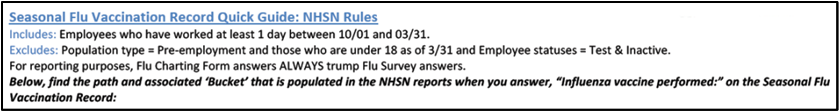
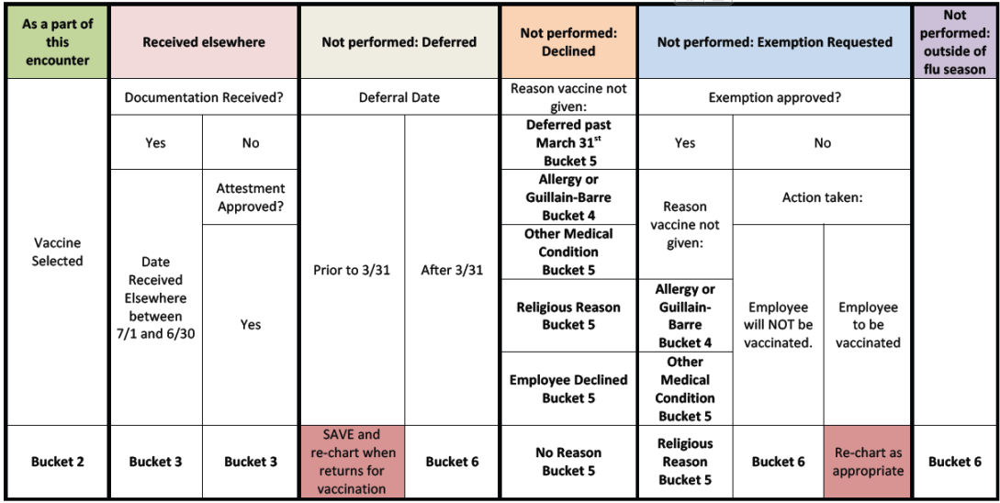
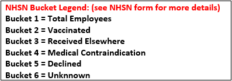

This document highlights some of what you need to know about NHSN reporting requirements and the logic behind the Axion Health Influenza Program that allows you to report to NHSN. The NHSN report was developed to capture vaccination rates of healthcare professionals. See Table 1 and Table 2 for an index of which pieces of the Axion Health Influenza program tie to the NHSN report.
* This is only a brief overview and you are encouraged to review The NHSN Manual for Healthcare Personnel Vaccination Module: Influenza Vaccination Summary ( http://www.cdc.gov/nhsn/PDFs/HPS-manual/vaccination/HPS-flu-vaccine-protocol.pdf ) for more detailed information about the NHSN report and requirements. Note, this manual should be supplemented with the most current information from the NHSN newsletter and website: NHSN website ( http://www.cdc.gov/nhsn )
Below is a highlight of some of the CDC data requirements for reporting to NHSN.
To calculate the numerator, NHSN report requires data to be categorized as follows:
The NHSN report denominator rules are as follows:
To calculate the denominator, NHSN report requires data to be categorized as follows:
Axion Health has incorporated logic into the influenza program to allow your facility to generate NHSN reports right from our system. In order to optimize the quality of your report you must comply with the following data requirements and considerations:
Let’s take a look at the NHSN “Bucket” Logic below for a precise way of how ReadySet’s charting form follows the NHSN’s guidelines explained above.
Table 1 shows the detail information the NHSN Reporting for a Mandatory Seasonal Influenza Program
Table 2 shows the detail information for the NHSN Reporting for a Non-Mandatory Seasonal Influenza Program
NHSN Report Includes: Employees who 1) Record Status Active = Yes 2) Age over 18 as of 3/31 of current season 3) Those who worked a minimum of 1 day during the NHSN reporting period
NHSN Report Excludes:1) Employee statuses = Test & Inactive 2) Population type = Pre-employment



| NHSN Numerator Bucket | Where is the data coming from? | Question | Answer | Rationale |
| Bucket 2 = Vaccinated | Seasonal Influenza Immunization Record = Submitted | Influenza Vaccine Performed by? AND Select a Vaccine? | EHS as part of this encounter AND Vaccine name is specified | Indicates a healthcare worker was vaccinated by EHS, a vaccine was selected and the charting/test form was submitted. |
| Bucket 3 = Received Elsewhere | Seasonal Influenza Immunization Record = Submitted | Influenza Vaccine Performed by? | Vaccination Received Elsewhere | According to CDC NHSN, a healthcare worker must provide written documentation that they were vaccinated elsewhere. Verbal documentation is not acceptable unless Attestment Approved. |
| Documentation Received? | Yes and Date if elsewhere between July 1 – June 30 of current flu season | |||
OR Attestment Approved? | OR Yes | |||
| Bucket 4 = Medical Contraindication | Seasonal Influenza Immunization Record = Submitted | Influenza Vaccine Performed by? | Not Performed – Exemption Requested | You must select this answer to this question in order for a medical contraindication to be categorized correctly, regardless of whether medical exemption is approved or denied. |
AND Exemption Status is one of the following? | AND Approved for Indefinite Exemption or Approved for Annual Exemption | You must select this answer to this question in order for a medical contraindication to be categorized correctly. Medical contraindications will come off the immunization record only because self-reported medical contraindications may lead to inaccurate data. | ||
AND Reason for Exemption approval is one of the following? | AND Reason for exemption approval is = Allergy, History of Guillain-Barre Syndrome or Other Medical Condition | Note: If you are using this field as a placeholder for pending exemption due to a contraindication you will still need to select this answer. If medical exemption is approved, you should keep this answer checked AND mark medical exemption approved. If medical exemption is denied (i.e. no medical contraindication), you should go back to the top of the form and select the correct option either Employee will NOT be vaccinated or Employee to vaccinated. | ||
| Bucket 5 = Declined | NA | NA | NA | In a Mandatory program declinations should not occur, please go back into the same charting/test form and select the appropriate option in Question 1 and submit now this person will be counted in the NSHN report. |
| Bucket 6 = Unknown | Seasonal Influenza Immunization Record or Survey | Not Performed – | Outside of Flu Season | Determined by seasonal Influenza surveys and/or immunization records that are in open order status, incomplete status or no survey. |
Do not open a new immunization record for the same worker because a status has changed (i.e. medical exemption approved or denied, going to vaccinate a healthcare worker who deferred vaccination last time due to an illness, etc.). You will edit the current immunization record with the changes and submit. This will keep your NHSN records correct and with no duplications to correct.
| NHSN Numerator Bucket | Where is the data coming from? | Question | Answer | Rationale |
| Bucket 2 = Vaccinated | Seasonal Influenza Immunization Record = Submitted | Influenza Vaccine Performed by? AND Select a Vaccine? | EHS as part of this encounter AND Vaccine name is specified | Indicates a worker was vaccinated based on the vaccine selected. |
Bucket 3 = Received Elsewhere | Seasonal Influenza Survey = Question 1 AND Seasonal Influenza Immunization Record = Submitted | I have already received elsewhere And Influenza Vaccine Performed by? | Received vaccination elsewhere Will also require the date received on the survey | According to CDC NHSN, a worker must provide written documentation that they were vaccinated elsewhere. Verbal documentation is not acceptable. |
| Bucket 4 = Medical Contraindication | Seasonal Influenza Immunization Record = Submitted | Influenza Vaccine Performed by? AND Exemption Status is? | Not Performed – Exemption Requested AND Approved for Indefinite Exemption or Approved for Annual Exemption | You must select this answer to this question in order for a medical contraindication to be categorized correctly. Medical contraindications will come off the immunization record only because self-reported medical contraindications may lead to inaccurate data. |
OR Influenza Vaccine Performed by? AND Reason vaccine not performed | Not Performed – Declined And Allergy, History of Guillain-Barre Syndrome or Other Medical Condition | |||
| Bucket 5 = Declined | Seasonal Influenza Survey = Submitted And Seasonal Influenza Immunization Record = Submitted | Question 1 – I do not want | I DO NOT WANT the seasonal Influenza vaccination for other reasons. | Since there is no exemption process for a non-mandatory program, healthcare workers who decline vaccination can be reported from their survey. |
| Seasonal Influenza Survey = Submitted | Influenza Vaccine Performed by? AND Reason vaccine not performed? | Not Performed – Deferred AND Deferral Approved AND Approval Date after March 31 | ||
| Seasonal Influenza Survey = Submitted | Influenza Vaccine Performed by? AND Reason vaccine not performed? | Not Performed – Exemption Requested AND Religious Reasons | ||
Bucket # 6 = Unknown Other examples that don’t meet the logic above | Seasonal Influenza Immunization Record or Survey | NA | NA | Determined by seasonal Influenza surveys and/or immunization records that are in open order status, incomplete status or no survey. |
Do not open a new immunization record for the same worker because a status has changed (i.e. medical exemption approved or denied, going to vaccinate a worker who deferred vaccination last time due to an illness, etc.). You will edit the current immunization record with the changes and submit. This will keep your NHSN records correct and with no duplications to correct.